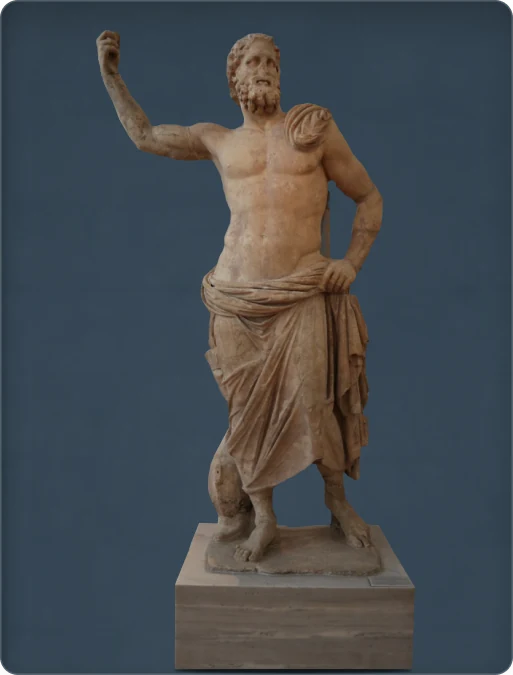

Poséidon

Le bras levé
Le bras droit levé devait tenir un trident. Près de la jambe, un dauphin soutient la statue. Découvert à Mélos en 1877, ce Poséidon grec de l’époque hellénistique est taillé dans le marbre de Paros. Un manteau couvre ses hanches.
Grèce · époque hellénistique · 125–100 av. J.-C. · marbre de Paros · hauteur 2,35 m · Musée national archéologique d’Athènes, inv. 235
Crédit photographique
George E. Koronaios / Wikimedia Commons · CC0 · fond modifié

Suivre le geste du bras droit
Partez de l’épaule et suivez le bras jusqu’à la main levée. Le geste prolonge la silhouette au-delà du torse et dirige le regard vers l’espace qui entoure la main. La notice propose que celle-ci ait tenu un trident. Pour comprendre cette lecture, regardez d’abord la position du bras, puis imaginez ce que la présence d’un objet changerait dans le contour de la figure. Le geste est visible dans le marbre. Le trident reste une hypothèse qui aide à interpréter la pose.
Repérer le dauphin près de la jambe
Le bras levé attire facilement l’attention, mais la partie basse de la statue mérite un second regard. Descendez le long du corps jusqu’au dauphin placé près de la jambe. Il soutient la figure, et sa présence ajoute aussi un détail à observer au pied de la sculpture. Comparez l’espace autour de la main à celui qui sépare la jambe et le dauphin. Cette comparaison fait ressortir le contraste entre un geste qui s’ouvre vers l’extérieur et un appui qui reste proche du corps.
Observer le manteau et le mouvement des plis
Le manteau couvre les hanches et crée une transition entre le torse et les jambes. Regardez les plis qui traversent les hanches avant de descendre. Comparez leurs lignes à la surface plus continue du torse. Le marbre de Paros sert ici à représenter aussi bien la peau que le tissu. Ce sont les formes des reliefs qui permettent de passer de l’un à l’autre du regard. Suivre les plis vers le bas offre aussi un autre chemin pour revenir à la jambe et au dauphin.
Lire les repères de la notice
La datation proposée, de 125 à 100 av. J.-C., place la statue dans l’époque hellénistique. L’année 1877 correspond à sa découverte à Mélos. La notice donne aussi une hauteur de 2,35 m et indique le Musée national archéologique d’Athènes comme lieu de conservation. Ces repères aident à situer l’œuvre. La hauteur donne une échelle au geste visible sur la photographie. Les mentions de Mélos et d’Athènes distinguent découverte et conservation.